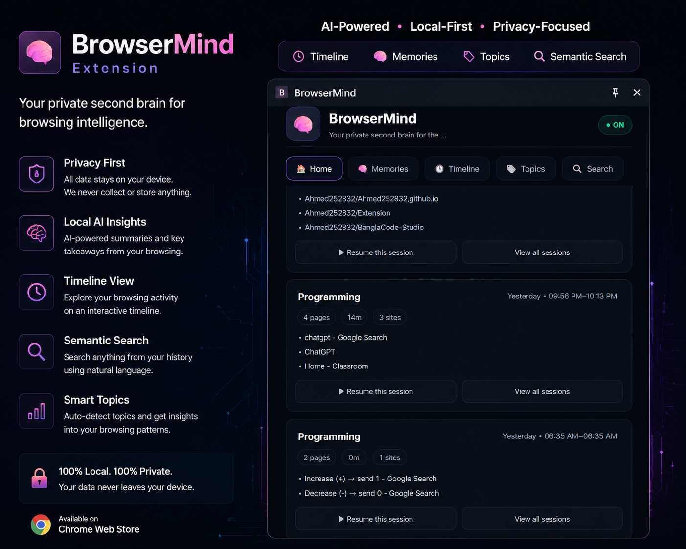

Things I build.
A collection of software, research and engineering projects focused on innovation, privacy and technology.

BrowserMind Extension
A Privacy-Focused Chrome Extension for Local Browsing History Analysis, Semantic Search, and AI-Assisted Insights.
BrowserMind works as a private second brain by organizing browsing activity into timelines, memories, and topics while keeping all user data locally on the device.
BanglaCode Studio
A Bengali-friendly mini programming language and compiler designed to simplify programming using Banglish keywords.
The project includes lexical analysis, syntax parsing, semantic checking and intermediate representation generation.
Future Project
Add upcoming project details, technologies and repository link here.
Future Project
Add upcoming project details, technologies and repository link here.